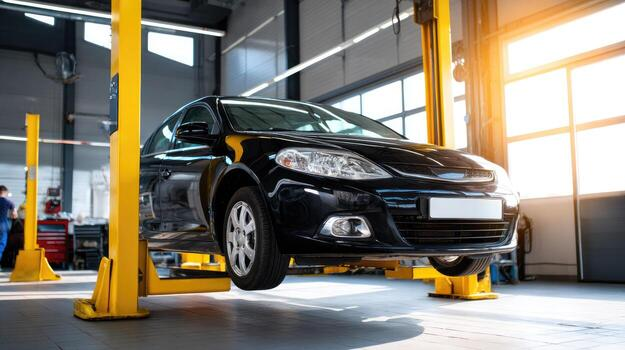

Как проехать к нам
Адрес: Республика Татарстан, г. Бавлы, ул. С. Сайдашева, 162А

Вы можете увеличить карту, переключиться в режим спутника и проложить маршрут.
Адрес: Республика Татарстан, г. Бавлы, ул. С. Сайдашева, 162А

Вы можете увеличить карту, переключиться в режим спутника и проложить маршрут.